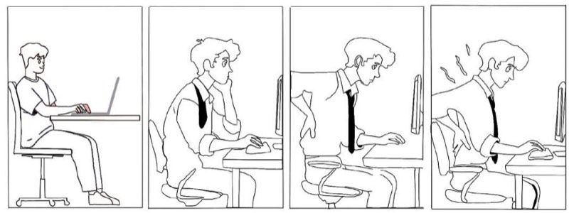
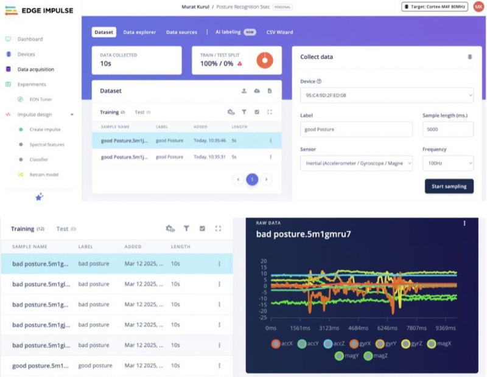

More work · Wearable technology
Postura
An Arduino wearable that uses motion sensors to spot poor posture through the day, and vibrates when it finds it.

Storyboard
Catch the slouch before it becomes a habit.
The user gradually starts to slouch while working. Postura detects the change and vibrates, a reminder to sit up before it settles into a habit.


Coding
Trained on motion-sensor data
I used Arduino and Edge Impulse to train Postura to recognise good and poor posture from motion data, then tuned the threshold so the haptic prompt fires on a real slouch rather than every small movement.
